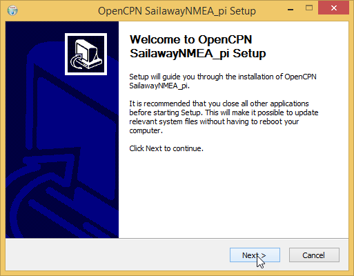
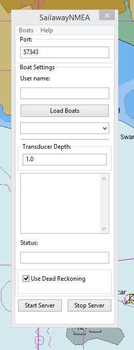
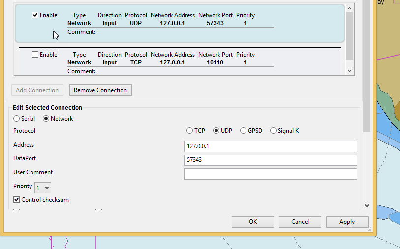
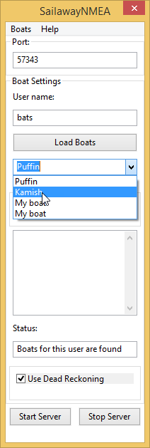

This plugin was inspired by and used a lot of code ideas from the OpenSource C# program 'SailawayToNMEA' created by Daniel López Lacalle:https://github.com/expilu/sailaway-api-to-nmea
Sailaway is a SimGame player that
can be installed on Windows and OSX, or via Wine on Linux. It
connects to a multiplayer sailing simulator/game on the Internet.
Highly realistic.
Over 9000 players so far. The basic edition is
free!
SailawayNMEA uses the API offered by 'Sailaway'
to provide a JSON feed from that program to OpenCPN. The JSON is then
read and the NMEA sentences produced fed to OpenCPN.
An
Internet connection is needed to load the boat data and provide the
feed.
After registering, playing and without running the Sailaway
game you have 7 days where you can still obtain a feed, which could
be useful for testing NMEA work.
You need to have registered with Sailaway,
chosen a boat and started sailing to provide a feed to OpenCPN. A
cheat sheet will be posted in the manual.
It is best to start
sailing at minumum speed! Registration gives you a user name which is
used to load the boats you are sailing.
The OpenCPN program should be closed before starting the installation. Double-click on the installer '.exe' file.

Follow the steps and finish
installing.
Start OpenCPN and select Options->Plugins from
the toolbar. Enable the SailawayNMEA plugin.
This
will place the Sailaway button on the toolbar.
Click the plugin button and the dialog will open.

The
plugin uses UDP to feed the data to OpenCPN. The connection to the
Sailaway server is via TCP/IP.
Default ports are 57343 for UDP and 10110 for TCP/IP. Set them up as shown here:

Enter your user name. Press 'Enter' or the button 'Load Boats' to download the boats you have chosen in Sailaway from the server.

It is useful to open Dashboard to see the data.
To avoid creating excessive load on the Sailaway server the sailing data is only downloaded every 10 minutes.
This is at the request of the developer of Sailaway. To provide a continuous NMEA feed DR positions are calculated.
You can disable this but performance will be
impacted.
Press the 'Start Server'
button to start the feed of sailing data.
If
you have Sailaway running and you alter course you will see this on
the chart display.
Just remember the 10 minute refresh rate.
The NMEA sentences produced from the sailing data.
I positioned myself in Sailaway so that I could see another player in the distance.
Depths across the virtual world have been
added to the server. Transducer depth can be set. (This is not a good
example)
To compare with the data displayed in the Sailaway game.
A course alteration.
1. Save user name in config.
2. Extract the route from the JSON feed and
display on the chart.